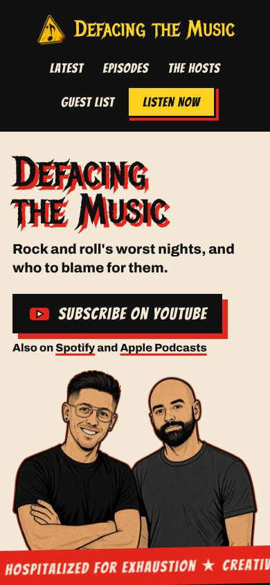
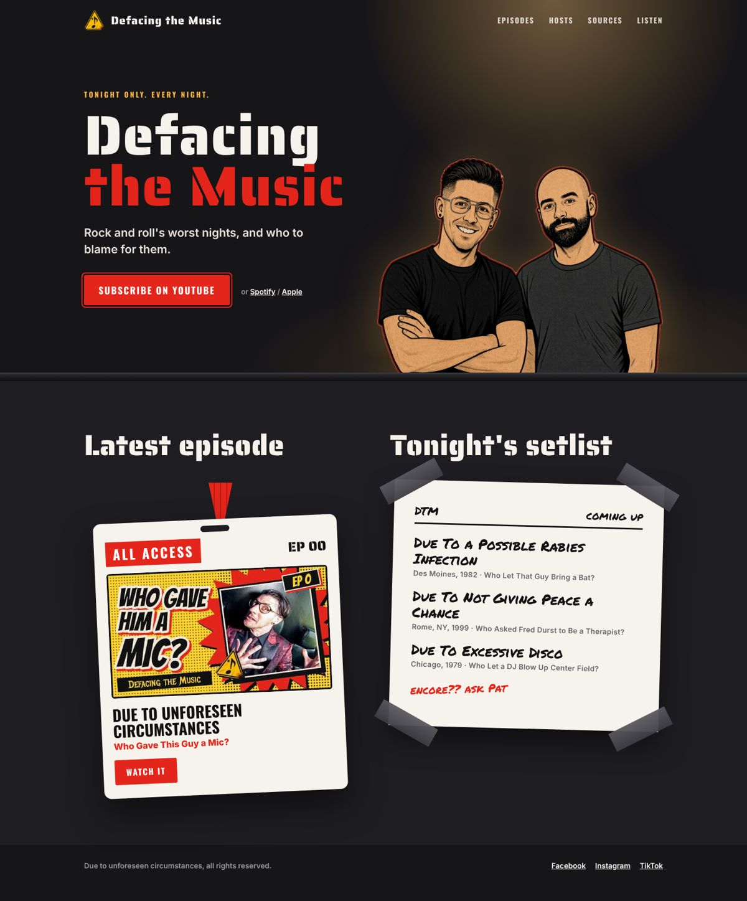
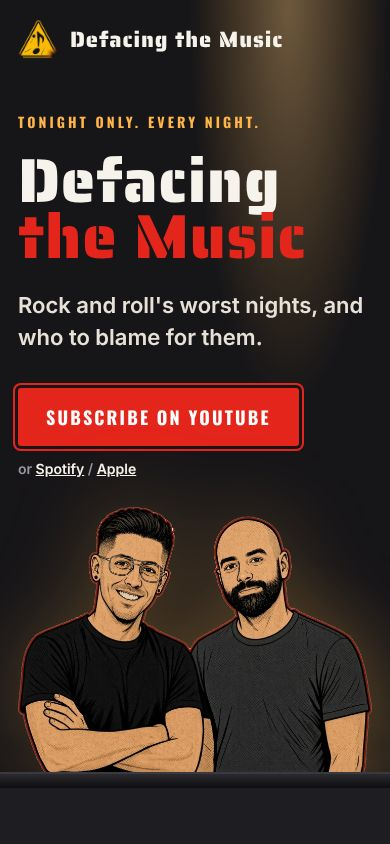
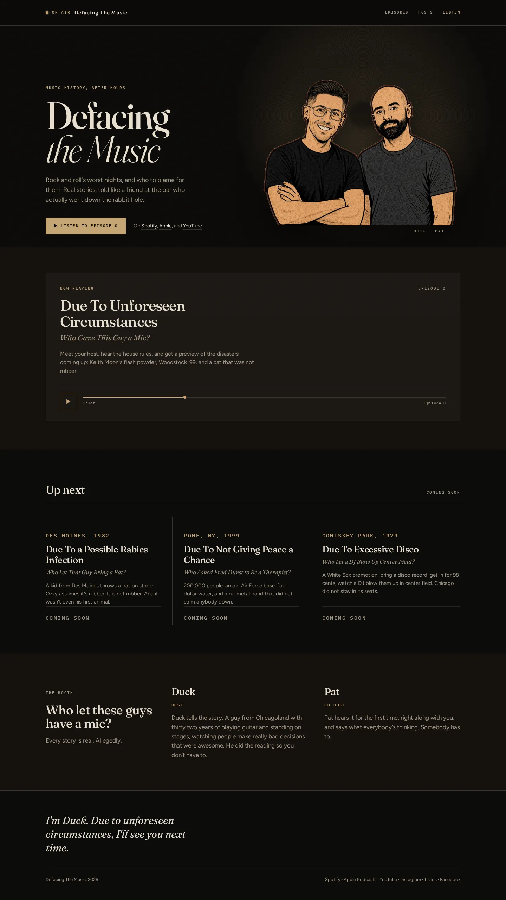
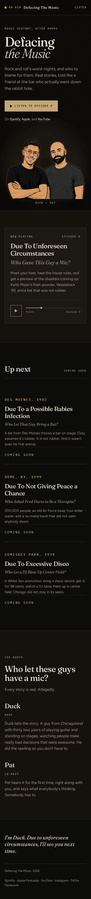
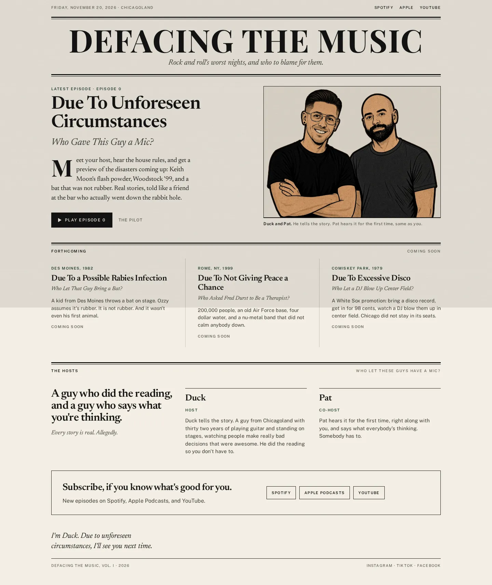
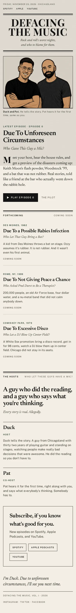

Website options
The site that's live now, plus the alternatives: Suspects, Backstage, and Grok's After Hours and Front Page. Same content in all of them so you're only comparing the look. Each one has a button to open the real page (try it on your phone too). Nothing here is live.
Current: Gig Poster
Black, red and cream with the cartoon drop shadows, Metal Mania lettering, the scrolling red banner. You two front and center on cream, latest episode right below.


Suspects
Ransom-note letters, you two as a paper-clipped polaroid stamped SUSPECTS, the latest episode as a case file. Shown in Oxblood; the page has six color schemes (switch with the links).


Backstage
A rock show, from the stage. dark stage, red, warm spotlight, paper white.
- Stencil lettering like a road case, you two standing in a warm spotlight on the stage edge.
- The latest episode is an ALL ACCESS laminate on a red lanyard.
- Upcoming stories are a Sharpie setlist gaffer-taped to the floor ("encore?? ask Pat").


After Hours
Late-night radio booth and worn record sleeve. Warm black, brass, ivory serif type. Latest episode as a now playing deck. Idea from Grok.


Front Page
Old music weekly broadsheet. Newsprint, ink, a touch of forest green. Name in a masthead, you two as the press photo, stories as feature headlines. Idea from Grok.


Things to talk about
- Which one feels most like the show when you hear it?
- Mixing is fine: a layout from one and colors from another.
- Whatever wins also sets the look for thumbnails, the YouTube banner and merch, so picture it on a shirt.